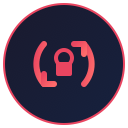

After each backup
- Open the generated viewer and spot-check conversations and media.
- Require the root manifest to say verified.
- Keep the archive private; it contains readable personal data.

Private, read-only backup of your Venice history
1 · Check
The extension scans Venice without changing its browser data. If this check fails, the backup button stays unavailable and the reason appears here.
Open Venice in this Brave profile, then refresh this check.
2 · Back up
The main button adapts to what Brave permits. Folder mode updates one archive in place; ZIP mode downloads a complete package first and smaller incremental packages later.
Checking whether Brave can grant this extension a reusable archive folder.
A full ZIP establishes the archive. Later incremental ZIPs contain changed files plus refreshed indexes and must be applied over that same extracted folder.
Readable archives keep chat content accessible in JSON.
The local archive repository remains the preferred backup.
3 · Verify and browse
Open viewer/index.html in the archive folder. A verified manifest and an empty unresolved-media index are the safety gate.
No archive has been downloaded from this profile yet.
Active key fingerprint: Waiting for Venice
The export does not rewrite Venice storage, clear the cache, or perform restore operations.
Lossless source stores, normalized conversations, content-addressed media, indexes, manifests, logs, and an offline viewer.